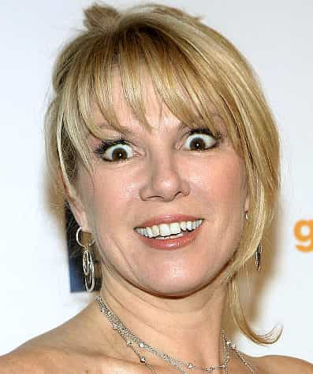

< < < Back
The 4 Types Of Women – Return Of Kings
Type I: The Seductress
Description:
This woman is a master at creating illusions and the goal of that illusion is to get you to fall in love with her. In relationships she pretends to be where she is not, thus it is very difficult for those inexperienced with women to see through her illusions as they are often “looking for her in the wrong place”.
In reality, her heart is broken, she has issues with rejection, and she is deathly afraid of just about everything. Her illusions are a survival strategy and a defense mechanism. She survives by getting others to support her and pay her way, and often has a “draining” effect on her lovers. (This feeling of having been “drained” can be noticed with most narcissistic women as well). Men never see this woman for who she is, in part because of her illusions, but also because her only value is sexual (she cannot be “truly” loved). She is the archetype for youthful women who must compete with each other for a man’s affection and resources.
Example:
I had the pleasure of interacting with a girl from South America most recently, and continue to see her a few times a week. Despite a relatively large head, she is one of the most beautiful women I’ve ever seen. Our first few conversations were normal, but it wasn’t long before I noticed both her overt and covert methods of flirtation and manipulation. I’ll leave the details out, but a variety of her behaviours had the goal to instill in me a sense that she was “my ideal,” something which I should strive for.
If she’s successful – and to some degree she is as my defenses aren’t adapted as well to women of other cultures – the ultimate effect would create a sense of “falling towards her” or more accurately, “falling towards each other,” almost like gravity, culminating in “psychological fusion” or “entanglement” that would then allow her to parasitize off of my emotional resources (as well as anything she could manipulate out of me – money, help, protection, etc.).
Because I’m familiar with this feeling, it immediately raised red flags for me and I began to reflect on our various interactions in earnest. It was then that I uncovered in her an ocean of anxiety and sadness from which she desperately fled (suppressed), which was the reason it was so difficult to pick up on initially. I do want to point out one thing: women like this tend to have “empty eyes” (though not always) as if they were puppets or dolls; as if they were dead or close to death. They have no true passion and their emptiness causes them to talk a lot to mask this, but it also calls out to you from deep within them, demanding that you fill their void.
Type II: Nutbar Factory

Description:
Over time, a woman’s beauty begins fade. When she realizes this, she frets that her meal ticket in life is about to expire. Moreover, the attention, protection and privileges she received from men because of her beauty are no longer forthcoming, and she suffers neglect and abuse at the hands of her husband, other men, and other women who compete with her. These experiences cause her to go coo-coo for coco-puffs as she tries to make sense of her cruel reality.
Her apparent stupidity and craziness creates in others, especially men, a sense of awe and disbelief. Her stupidity and craziness boils down to the tendency for her to focus in on details at the expense of context. She does this in an effort to convince herself and others that she (woman) is good and the world (man) is bad. She makes it through life by being exploited for the humour she creates in others. Her exploiters never let on to her that she is being exploited, but they do provide her a portion of the proceeds so that she is taken care of and can continue to generate revenue.
She has one alternative life strategy. Once in a while, someone takes pity on her (the closest she will get to experiencing love) and they provide for her. The more loony she is, the more likely it is that she will be abused as her disconnect from reality frustrates others who interact with her, but also signals to others she is disconnected from any social resources and protection, thus arousing both anger and sadism.
Example:
I worked on a project with a woman who fell into this category. One day while we were sitting in the foyer, I watched as she misconstrued the sentence of a guy we were talking to. Normally I write such things off telling myself things like it’s not my business or don’t get involved, but I was so amazed at her reaction to him which seemed out of nowhere, that I wondered if I missed something important and finally took the time to figure out just where she went wrong.
It was subtle, but it was one of those things where you have to look at the context of the whole sentence to get the meaning instead of just the word/literal meaning. She was unable to do this and blurted out a response that literally made her seem crazy both to him and to me. Perhaps what’s most interesting about this girl is that she says she often feels ignored, like people don’t listen to her/take her seriously. Of course she hasn’t thought to ask herself why that is.
Type III: The Witch
Description:
This is a phallic (masculinized) woman who is hyper narcissistic. She is best exemplified by Kris Jenner (Kim Kardashian’s mother). This woman, having given up on receiving love but still desperately in need of it, takes it by force. She hates men and children, and she secures resources by exploiting her lovers and her children, and at times through them, other members of the population who would not have necessarily fallen under her “spell” if approached directly.
Her anger and pain at being unloved forms a new substrate on which she constructs her identity, and her demand for love or resources places a huge strain on her relationships (and society) as she seeks to attain the love and care that was withheld from her in childhood. Her hate for her children stems from the fact that she deems them more beautiful and more worthy than her of love, and so she competes with them. Her hatred for man stems from the fact that she, like Medusa, blames him for what she has become.
Example:
I personally never interact with women like this – I don’t so much as look in their direction – but an example of this type would be your garden variety feminist. More specifically, she tends to be clustered between the ages of 35-55, but you can find her through all age ranges. Of the three women discussed so far, this woman is by far the most destructive (especially if she has any sort of intelligence).
She destroys her children – they often suffer from anxiety disorders, eating disorders, depression, or repeat the cycle of narcissism and emotional abuse. She destroys her husband – she will find either a man that she can dominate and abuse every day – one who will never leave her, or she will find a man she can’t dominate and resent him for it all the while competing with him and tearing him down to the best of her ability until he finally leaves her, thus reopening old narcissistic wounds. She destroys companies by creating toxic, unproductive environments. She even destroys societies.
For those of you that would hold up Norway and find fault with this last assertion, I would put to you that if it weren’t for the oil reserves in the Scandinavian countries, their societies would have faced some sort of economic crisis by now, but are likely heading towards instability as the family and entrepreneur are replaced by government and corporations – oligopolies and monopolies.
Type IV: The True Woman
Description:
If a woman is able, she resigns all claims of entitlement to love and resources. It is only then that she is “born again” into true femininity. It is at this point that she attains true personhood, personality and individuality, and is finally capable of loving and being loved. This is the only woman that is an asset to her husband and companies. Her intelligence is of a very peculiar kind, quite unlike masculine intelligence, but powerful and potent in its own right. Her skills lie not in securing resources, but in refining and re-purposing them so that they best fit a given task. In the economy, she will be found at secondary and tertiary levels of production.
Example:
In my life I’ve only met one woman that falls into this category (even as she retained in her elements of the other three), but this doesn’t surprise me because Freud often said only a handful of women ever overcome their Oedipus complex. If you happen to find a woman like this, you’ve found a love that happens maybe once a century (assuming you have done the work necessary to enable you to love her as you should).
I’m finding it difficult to find words that capture what she is like, only the feeling she gives off can do her true justice. She was very quiet but very intelligent (an MD with a specialty). She was also very kind, gentle and loyal, and she had an innocence about her that was refreshing. She put everyone else before herself right up until she died (a year ago). I was upset with her because of this; I wanted her to be selfish. I wanted her to experience the rush of energy you get from giving in to your basest instincts, uninhibited by attachments. It made me sick that she wouldn’t take my advice – I had hoped that this rush would “revive” her, as she was very weak leading up to her death.
I was being naïve. I couldn’t see it at the time because I wasn’t as aware as I am today of the various differences between men and women, but she already became what she was meant to become. She never demanded love, or anything for that matter, which along with her innocence, made all of her movements and expressions seem so genuine. Because she didn’t expect to be loved (or try to manipulate love in any way), she has been the only woman I’ve met truly deserving of all the love I could give.
Her type remains for me the one beacon of hope in the cesspool that is modern woman, and I share her with you so that when you see her, she will be more easily identifiable to you (and perhaps you’ll do better at avoiding the other three types). I believe that it’s necessary to have an understanding of her, even if you haven’t found her yet, because within us there is a phylogenetic memory of her waiting to be reawakened by her presence.
For most of us, we keep this memory locked away, safe from the harm that would befall it should it be corrupted by our modern women. But by keeping it locked away, we also keep a part of ourselves locked away with it. Until this part is restored to its rightful place beside/within us, we as men will always be susceptible to the vicissitudes of women, shackled to our fellow man, and trapped in a cycle of “endless becoming” – just “one damn thing after the next”.
Read More: 6 Most Common Types Of Girls You’ll Encounter Online


{kind=link}
{kind=link}
{kind=link}